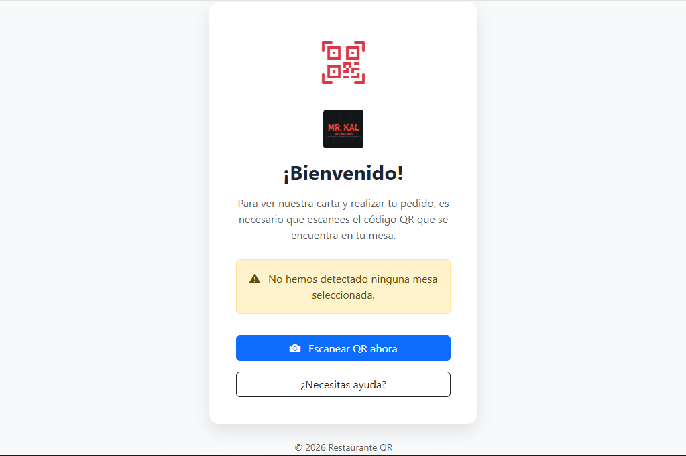
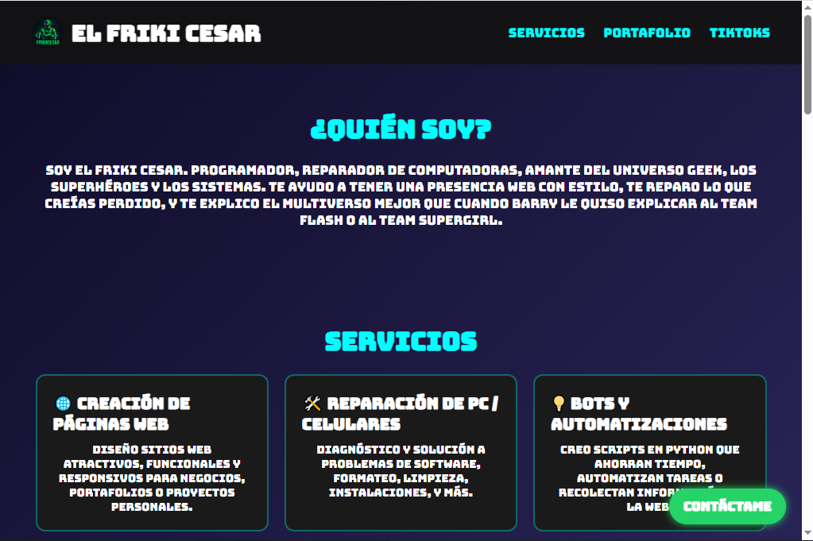
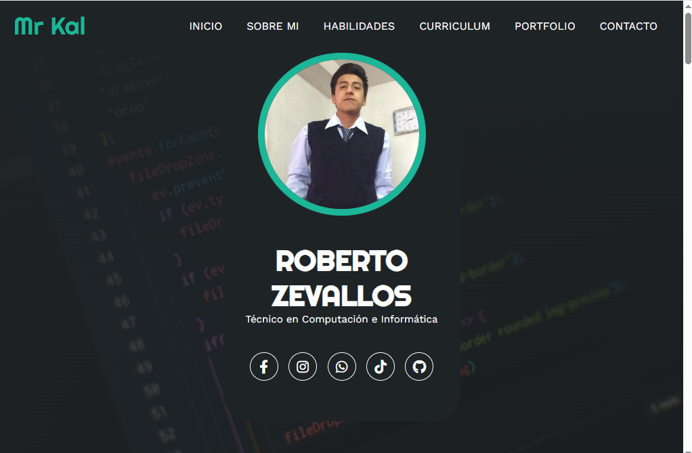
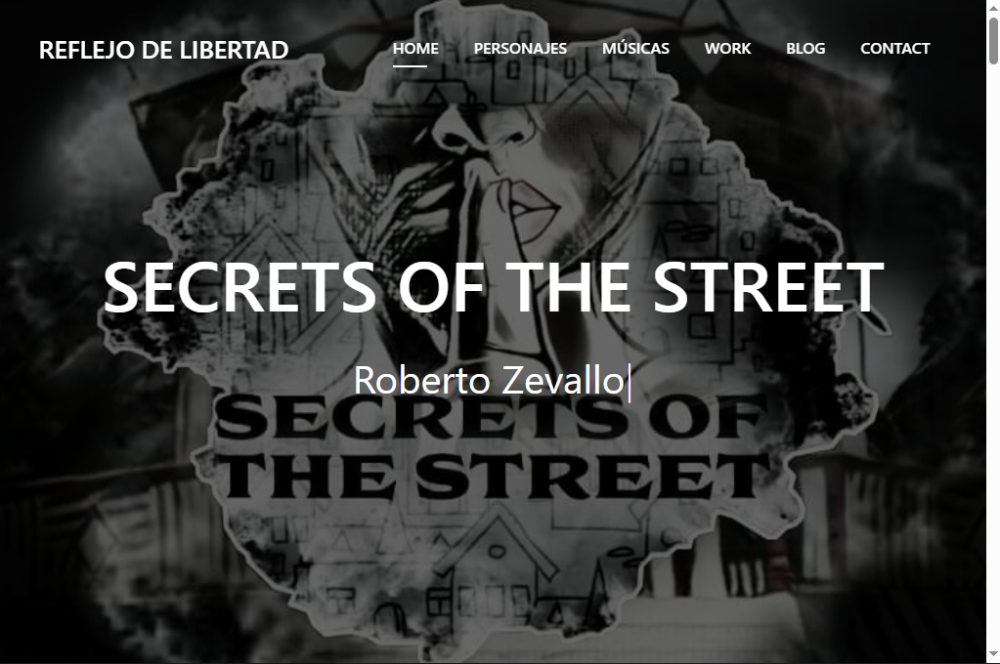
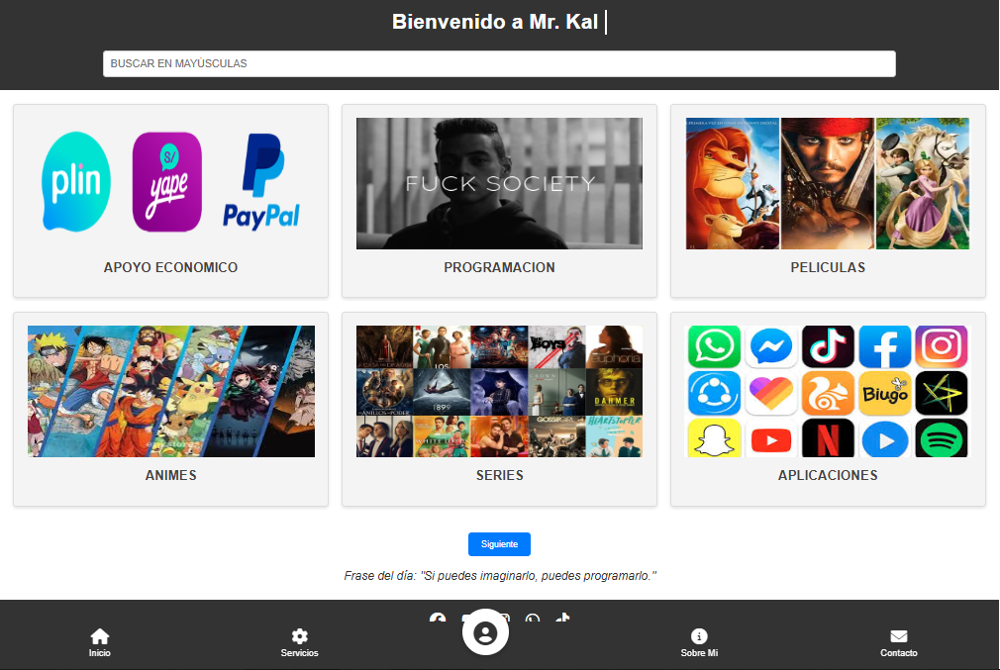
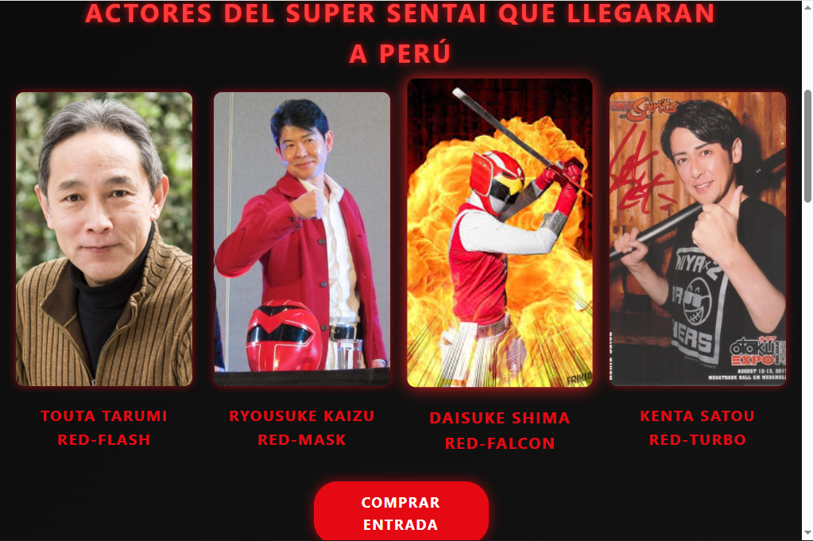
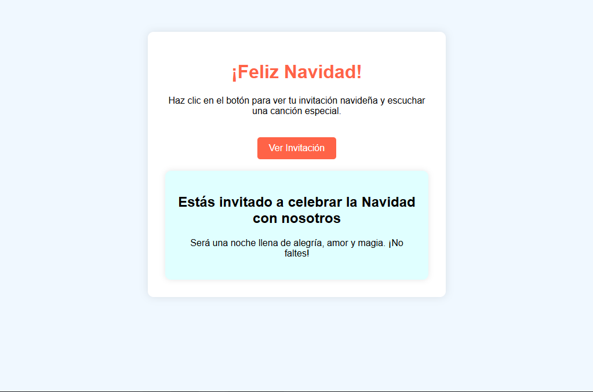
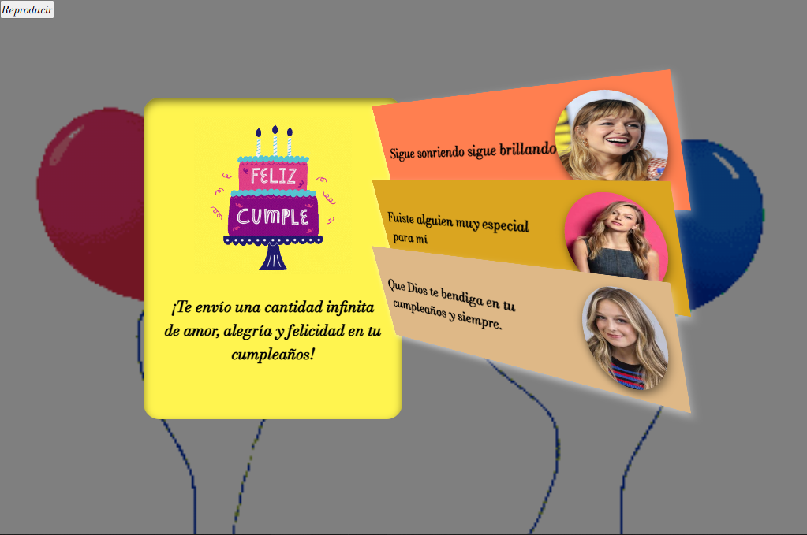
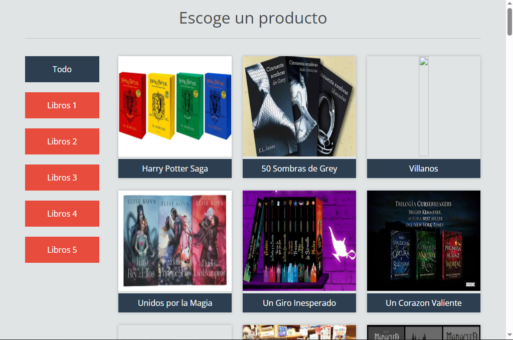
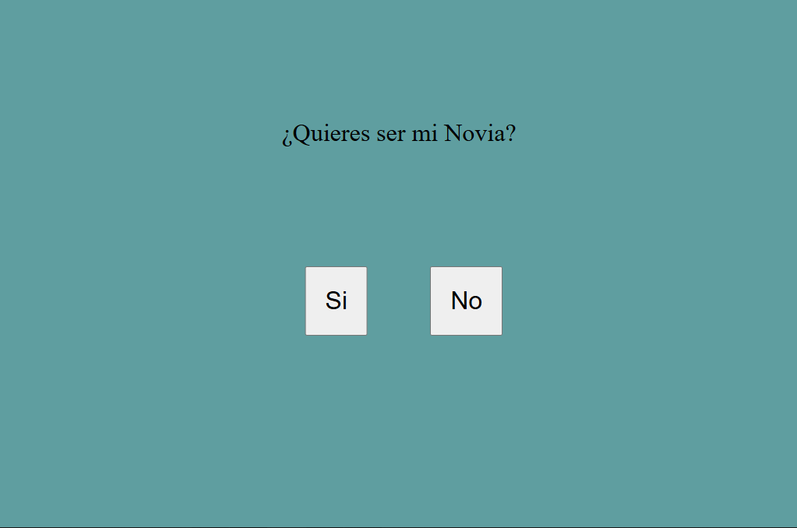

Get to know me better
I am a passionate developer with a solid track record in creating digital solutions. I love solving complex problems and constantly learning new technologies. My approach combines technical creativity with engineering best practices to deliver high-quality products.
Frontend
Backend
Tools
Education
Systems Engineering
Universidad César Vallejo Oct 2023 - Present- Currently in the 8th cycle.
- Training focused on programming, web design, systems analysis, and IT project management.
Technical Professional in Computing and Informatics
IESTP Chancay 2019 - 2022- Graduated. Specialization in technical support and software development.
- Network administration and computer equipment maintenance.
Training in Money Laundering Prevention (SPLAFT)
Notaría Narvaez 2025- Management of prevention systems and digital data registration.
- Handling of sensitive information and regulatory compliance in systems.
Professional Experience
With a solid foundation in Technical Support and IT Infrastructure, I have evolved towards Systems Engineering and Web Development. My experience ranges from hardware maintenance, networks, and database management in critical environments (Hospitals, Notaries), to the implementation of web solutions and system debugging. I combine practical technical skills with advanced academic training to solve complex problems.
Freelance Web Developer
Independent Projects Present- Design of custom websites, digital CVs, and personal portfolios.
- Development of management systems for businesses and commercial premises.
- Implementation of custom web solutions based on client requirements.
ReactHTML/CSSPHPSistemas
IT Support & Database Manager
Notaría Narvaez (Huaral) Oct 2023 - Present- Management and migration of databases for money laundering prevention (SPLAFT).
- Comprehensive technical support: maintenance and repair of computers, printers, and technological equipment.
- Resolution of hardware and software incidents in the notary's infrastructure.
SQLHardwareRedesSoporte TI
Technical Support & Systems Assistant
Hospital de Chancay "Dr. Hidalgo Atoche López" Jun 2023 - Oct 2023- Maintenance of network infrastructure, structured cabling, and security cameras (CCTV).
- Support in web design and bug fixing in internal hospital systems.
- Diagnosis and repair of technical failures in computer equipment.
RedesCCTVHTML/CSSHardware
Technical & Administrative Support
CLAS Pedro Canevaro Garay (Chancayllo) Ene 2023 - Jun 2023- Technical support for computer equipment and assistance in the accounting area.
- Preventive and corrective hardware maintenance.
ExcelSoporteContabilidad
DJ & Audio Operator
Estación de Radio 2018- Operation of sound equipment and live audio mixing.
Featured Projects

Technical Services Landing Page

Modern Web Portfolio

TV Series Fan Page

Personal File Repository

Conventions Web (Super Sentai / Comic Con)

Interactive Christmas Invitation

Digital Birthday Card
Dedicated webpage for a special celebration. Features an elegant design divided into two sections: a visual gallery with photos of the person and a space dedicated to an emotional congratulatory message. Includes an interactive button to play celebration music.
HTMLCSSJavaScriptAudio

Interactive Book Catalog
